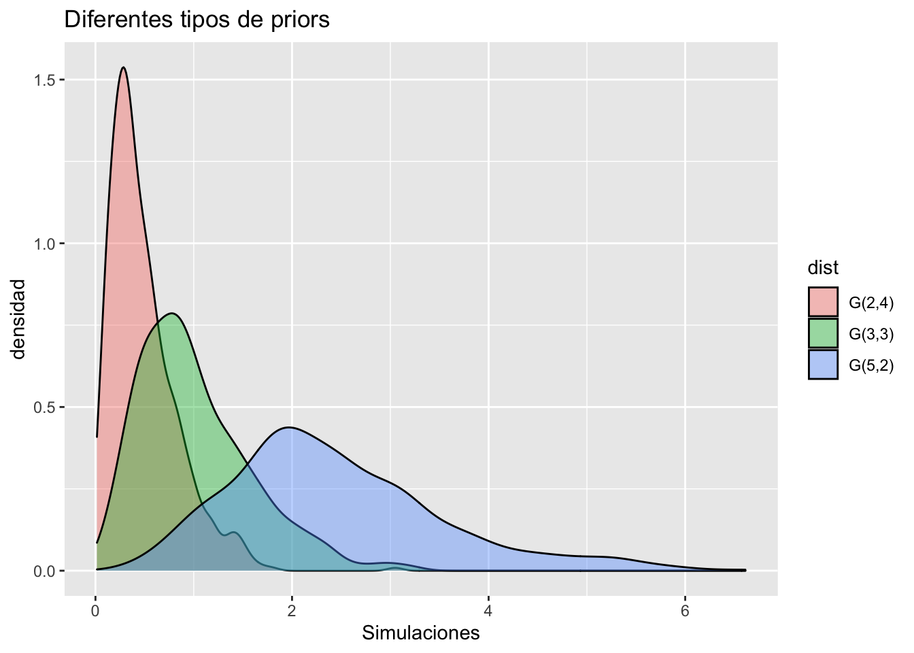
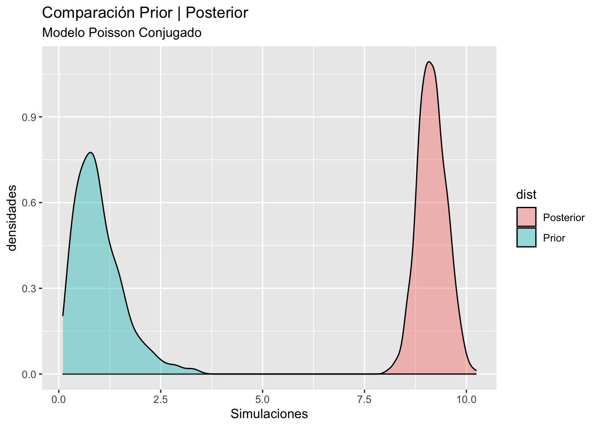
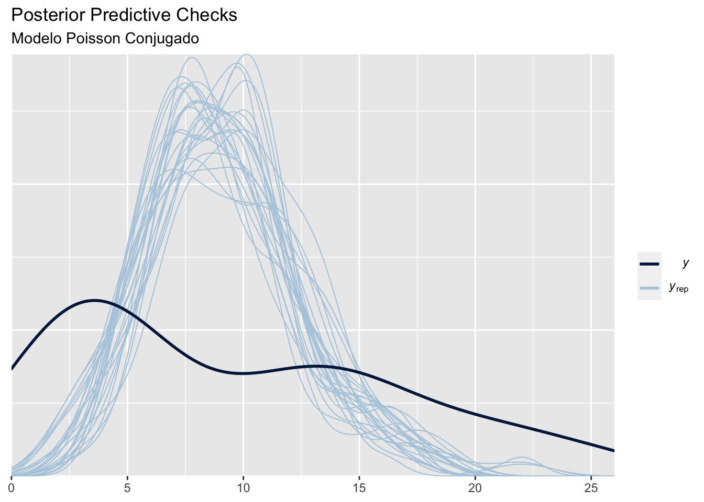
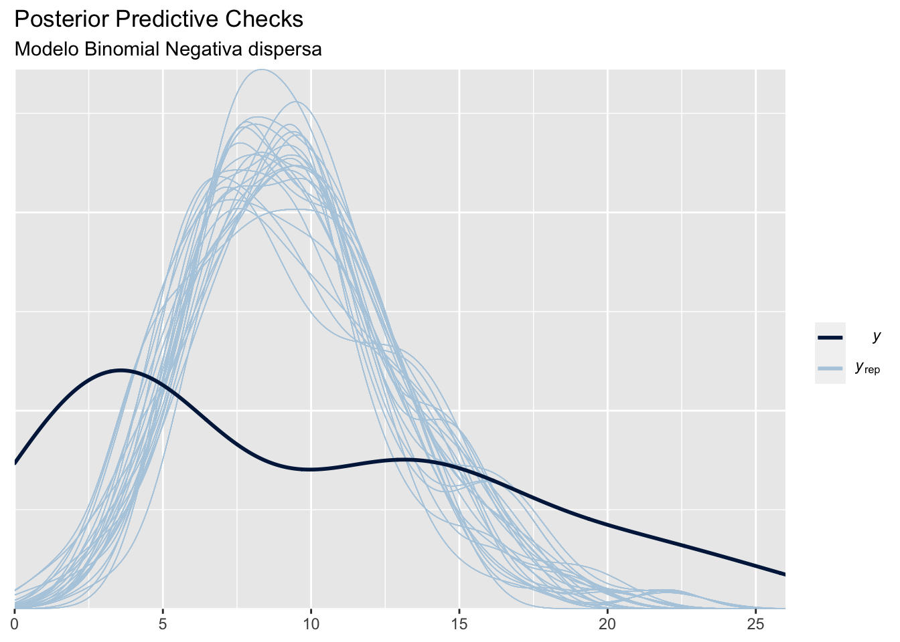
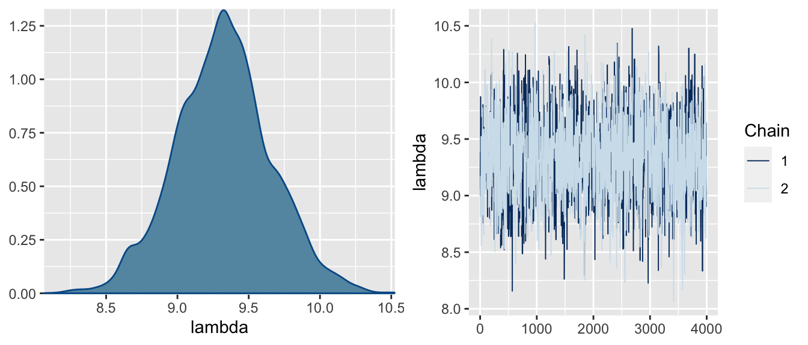
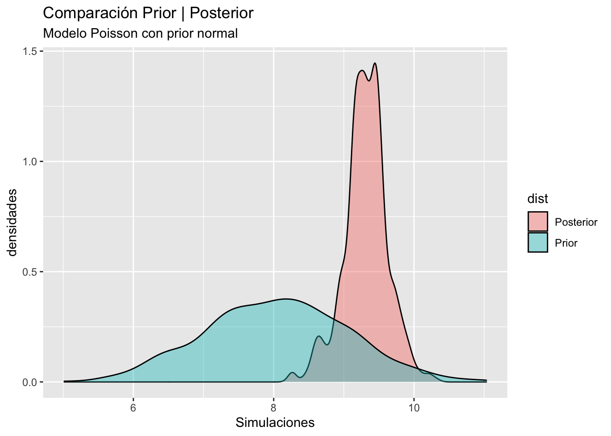

library(GGally)
library(ggplot2)
library(flextable)
library(bayesplot)
library(posterior)
data("InsectSprays")Este post muestra los pasos del Bayesian Workflow para analizar la base de datos Insects-Spray.
Se desea evaluar la efectividad de seis diferentes tipos de repelentes para insectos (A,B,\ldots,F). El experimento consiste en contar el número de insectos en cierta área delimitada, horas después de aplicar cierto tipo de repelente. El experimento se replicó 72 veces, 12 veces para cada uno de los tipos de repelente.
La Figure 1 resume la distribución y valores medios del número de insectos encontrados en cada uno de los tipos de repelente utilizados. Claramente, las distribuciones son no simétricas y muy heterogéneas entre cada uno de los tipos, y los datos son de tipo discreto, por lo tanto se descartan los supuestos de normalidad.
Supondremos tres modelos distintos:
- Modelo de Poisson, con parámetro \lambda desconocido y prior conjugada de tipo Gamma:
M_1: \ y_i \sim Poisson(\lambda), \quad \lambda \sim Gamma(\alpha,\beta).
- Modelo Binomial negativa, con parámetro p desconocido y prior dispersa:
M_2: \ y_i \sim \text{Neg-Binom}(n,p), \quad \lambda \sim U(1,1).
- Modelo de Poisson, con parámetro \lambda desconocido y prior no conjugada de tipo Normal:
M_3: \ y_i \sim Poisson(\lambda), \quad \lambda \sim N(\mu,\sigma^2).
Note que en cada modelo, no consideramos la dispersión entre grupos presente en los datos, simplemente queremos modelar la distribución global del número de insectos contabilizados independiente del repelente utilizado.
ggplot(aes(y = count, x = spray,fill = spray),data = InsectSprays)+
geom_boxplot()+
labs(title = "Número de insectos por tipo de repelente",
x = "tipo de repelente",y = "Número de insectos")Los ejemplos propuestos se resolverán de tres diferentes formas:
Los modelos M_1 y M_2 se resolverán con un Gibbs sampler, que para estos casos es un simple MC.
El modelo M_3 se resolverá con un Metrópolis-Hastings.
Modelo M1 de Poisson Conjugado
Se define el número de insectos encontrado como una variable aleatoria discreta de tipo Poisson con parámetro \lambda desconocido (y_i \sim Poisson(\lambda)) y aleatorio, la priori para \lambda es una prior conjugada y “poco informativa”. Asumamos que los repelentes aplicados son efectivos y elegir una prior Gamma tal que centre la probabilidad en valores cercanos al cero.
Selección de la prior
En este caso, la prior a usar es:
\lambda \sim Gamma(3,3). Figure 2 presenta posibles candidatos a priors para el parámetro \lambda.
x = c(rgamma(600,2,4),rgamma(600,3,3),rgamma( 600,5,2))
y = c(rep("G(2,4)",600),rep("G(3,3)",600),rep("G(5,2)",600))
df = data.frame(sim = x, dist = y)
ggplot(aes(x = sim,fill = dist),data = df)+
geom_density(alpha = 0.4)+
labs(title = "Diferentes tipos de priors",
x = "Simulaciones",y = "densidad")
La distribución a posteriori para \lambda es:
\lambda |y \sim Gamma(3 + \sum_{i=1}^n y_i,3+n).
Donde, \sum_{i=1}^n y_i = 684 y n = 72. Por lo tanto la posterior final es: \lambda |y \sim Gamma (687,75).
Estimadores puntuales
El estimador puntual para \lambda es:
\hat \lambda = E[\lambda | y] = \frac{687}{75} \approx 9.16. Figure 3 muestra la comparación de las densidades prior y posterior para el modelo Poisson, pese que la prior se eligió con el propósito de ser no informativa, la posterior es muy especifica y centrada en su primer momento.
x = c(rgamma(600,3,3),rgamma(600,687,75))
y = c(rep("Prior",600),rep("Posterior",600))
df = data.frame(sim = x, dist = y)
ggplot(aes(x = sim,fill = dist),data = df)+
geom_density(alpha = 0.4)+
labs(title = "Comparación Prior | Posterior",
subtitle = "Modelo Poisson Conjugado",
x = "Simulaciones",y = "densidades")
Los intervalos de credibilidad se encuentran mediante Monte-Carlo. Los intervalos de credibilidad al 90% para la posterior son:
IC = quantile(rgamma(600,687,75),probs = c(0.05,0.95))
IC 5% 95%
8.554635 9.798944 Posterior predictive checks
En este caso se realizaran comparaciones de la densidad predictiva del modelo, esta se puede estimar con Monte-Carlo mediante el siguiente procedimiento.
Para k = 1,2,\ldots,w; hacer
1.1 Simular un valor \lambda_k de la posterior Gamma(687,75).
1.2 Simular un valor de la verosimilitud y^*_k \sim Poisson(\lambda_k).
Los valores y^*_1,y^*_2,\ldots,y^*_w son una muestra de y^* | y.
Figure 4 compara las predictivas distribuciones obtenidas, notamos que la función predictiva esta muy centrada en el valor esperado de los datos, y provee un ajuste muy pobre.
bayesplot_theme_set(theme_grey())
# Predictive
yrep = rep(rpois(600,rgamma(600,687,75)),72)
yrep = matrix(yrep,ncol = 72,byrow = TRUE)
y = InsectSprays$count
ppc_dens_overlay(y, yrep[1:200,])+
labs(title = "Posterior Predictive Checks",
subtitle = "Modelo Poisson Conjugado")
Modelo M_2 de Binomial Negativa con priori dispersa
Se define el número de insectos encontrado como una variable aleatoria discreta Binomial negativa con parámetro p desconocido y m = 30 repeticiones, (y_i \sim \text{Neg=Binom}(30,p)). La prior es conjugada para p es la distribución Beta.
p \sim Beta(\alpha,\beta).
Esta prior genera una posterior de tipo Beta, pero si \alpha = \beta = 1 la distribución es uniforme en el intervalo unitario, que a su vez es una prior dispersa para p.
La posterior para p es:
p | y \sim Beta(1 + 30n,1+\sum_{i=1}^n y_i).
Por lo tanto, la posterior final es: p |y \sim Beta (2160,685). Los estimadores puntuales y por intervalos son:
\hat p = E[p | y] = \frac{2160}{2160+685} \approx 0.759, y los intervalos de credibilidad al 90% :
IC = quantile(rbeta(600,2160,685),probs = c(0.05,0.95))
IC 5% 95%
0.7465970 0.7713715 Los dos valores anteriores no brindan información del fenómeno de estudio, para una mejor interpretador, calculamos el número de insectos esperado a posterior, esto es, el valor esperado de la función de probabilidad que modela los datos, calculado con el estimador puntual obtenido
E[y|p = \hat p] = \frac{r(1-\hat p)}{\hat p} \approx 10. El número esperado de insectos con el modelo Binomial negativa es de 10 insectos, que es mayor al obtenido por el modelo M_1 cuyo valor esperado fue de 9.16 insectos.
Code
# Código preliminar al gráfico
bayesplot_theme_set(theme_grey())
# Compare distributions
x = c(rbeta(600,1,1),rbeta(600,2160,685))
y = c(rep("Prior",600),rep("Posterior",600))
df = data.frame(sim = x, dist = y)
# posterior predictive checks
yrep = rep(rnbinom(600,size = 30,rbeta(600,2160,685)),72)
yrep = matrix(yrep,ncol = 72,byrow = TRUE)
y = InsectSprays$countggplot(aes(x = sim,fill = dist),data = df)+
geom_density(alpha = 0.4)+
labs(title = "Comparación Prior | Posterior",
subtitle = "Modelo Binomial-Negativa dispersa",
x = "Simulaciones",y = "densidades")
ppc_dens_overlay(y, yrep[1:200,])+
labs(title = "Posterior Predictive Checks",
subtitle = "Modelo Binomial Negativa dispersa")
Figure 5 muestra la comparación de las densidades prior y posterior para el modelo Binomial negativa, pese la sobre-dispersión de la prior, se obtiene una posterior muy informativa y especifica. El gráfico derecho compara las predictivas obtenidas, notamos que la función predictiva esta muy centrada en el valor esperado de los datos, y provee un ajuste muy pobre.
Modelo M_3 de Poisson con prior débil
Se define el número de insectos encontrado como una variable aleatoria discreta de tipo Poisson con parámetro \lambda desconocido (y_i \sim Poisson(\lambda)) y aleatorio, la prior para \lambda es
\lambda \sim N(8,1). En este caso la prior es no conjugada y se debe realizar el algoritmo de Metrópolis, Metropolis et al. (1953). El siguiente código muestra la implementación del algoritmo para nuestro modelo, la primera función calcula la densidad propuesta que es simplemente el producto de le verosimilitud y la prior, (f_p(\theta) = f(y|\theta)f(\theta)). La segunda función es del algoritmo mismo.
Code
post = function(y,lambda,mu,sigma){
prior = dnorm(lambda,mean = mu,sd = sigma)
like = prod(dpois(x = y,lambda = lambda))
post = like*prior
return(post)
}
metropolis = function(y, mu, sigma = 1,iter = 5000,inits = rnorm(1, 5,1)){
lbd = rep(0,iter)
lbd[1] = inits
for (i in 2:iter) {
temp = rnorm(1,mean = lbd[i-1])
p1 = post(y,lambda = temp,mu = mu,sigma = sigma)
p2 = post(y,lambda = lbd[i-1],mu = mu,sigma = sigma)
pa = p1/p2
lbd[i] = lbd[i-1]
if(pa > runif(1))
lbd[i] = temp
}
return(lbd)
}Para este ejemplo simulamos dos cadenas independientes de 5,000 iteraciones, donde el valor inicial de cada cadena se simuló de una normal con media cinco y varianza uno.
lambda1 = metropolis(y = InsectSprays$count,mu = 8)
lambda2 = metropolis(y = InsectSprays$count,mu = 8)
df1 = data.frame(chain = sort(rep(1:2,4000)),
lambda = c(lambda1[1001:5000],lambda2[1001:5000]))
pdf = posterior::as_draws(df1)
mcmc_combo(x = df1,pars = "lambda")
Figure 6 muestra los trace-plots de ambas cadenas que se entrelazan entre ellas indicando estacionariadad y convergenica, el grafico de densidades es uni modal y simétrico indicando convergencia. Table 1 muestra las estadísticas resumen de la posterior de \lambda, dos indicadores importantes muestran convergencia de las cadenas, el effective sample size (ess) que indica el número de muestras independientes a las que equivalen las muestras obtenidas de la cadenas, dichos valores deben ser similar al número de iteraciones. El factor de convergencia \hat R es un valor que compara las varianzas de las cadenas, valores aproximados a 1 indican convergencia.
x = summarise_draws(pdf)
ft = flextable(x[2,])
autofit(ft)variable | mean | median | sd | mad | q5 | q95 | rhat | ess_bulk | ess_tail |
lambda | 9.341607 | 9.332651 | 0.3359167 | 0.3318626 | 8.798246 | 9.88604 | 1.000066 | 1,555.832 | 1,831.55 |
Table 1 muestra la media a posterior e intervalos de credibilidad para la posterior de \lambda. Además, se muestra el error de Monte-Carlo, dicho error debe ser cercano a 0, valores muy grandes indican alta dispersión de las simulaciones que se interpreta como una mala aproximación del método.
Code
# Preliminar
bayesplot_theme_set(theme_grey())
x = c(rnorm(600,8,1),pdf$lambda[1001:1600])
y = c(rep("Prior",600),rep("Posterior",600))
df = data.frame(sim = x, dist = y)
# Predictive
yrep = rep(rpois(600,pdf$lambda[1001:1600]),72)
yrep = matrix(yrep,ncol = 72,byrow = TRUE)
y = InsectSprays$countggplot(aes(x = sim,fill = dist),data = df)+
geom_density(alpha = 0.4)+
labs(title = "Comparación Prior | Posterior",
subtitle = "Modelo Poisson con prior normal",
x = "Simulaciones",y = "densidades")
ppc_dens_overlay(y, yrep[1:200,])+
labs(title = "Posterior Predictive Checks",
subtitle = "Modelo Poisson con Prior débil")
Figure 7 muestra la comparación de las densidades prior y posterior para el modelo Poisson, la dinámica entre la prior y posterior es mas natural, pero la influencia de los datos hace que la prior sea de leve influencia en la posterior. El gráfico derecho compara las predictivas obtenidas, notamos que la función predictiva está muy centrada en el valor esperado de los datos, y provee un ajuste muy pobre.
Selección de Modelos
Para seleccionar el mejor modelo de los tres, utilizaremos los cuatro criterios definidos, Factor de Bayes, log-likelihood elpd, y WAIC.
Factores de Bayes
El código para calcular la densidad marginal de cada modelo es:
Code
Marginal1 = function(y,iter = 10000){
mar = 1:iter
for (i in 1:iter) {
mar[i] = sum(dpois(x = y,lambda = rgamma(n = 1,shape = 3,3),log = TRUE))
}
return(mean( exp(mar) ))
}
Marginal2 = function(y,iter = 10000){
mar = 1:iter
for (i in 1:iter) {
mar[i] = sum(dnbinom(x = y,prob = rbeta(1,1,1),size = 30,log = TRUE))
}
return(mean( exp(mar) ))
}
Marginal3 = function(y,iter = 10000){
mar = 1:iter
for (i in 1:iter) {
mar[i] = sum(dpois(x = y,lambda = rnorm(n = 1,mean = 8,sd = 1),log = TRUE))
}
return(mean( exp(mar) ))
}Las estimaciones de Monte-Carlo, con m = 50,000 iteraciones para cada modelo son:
m1 = Marginal1(y = InsectSprays$count,iter = 50000)
m2 = Marginal2(y = InsectSprays$count,iter = 50000)
m3 = Marginal1(y = InsectSprays$count,iter = 50000)Los factores de Bayes para comparar los 3 modelos son:
FB = log(c(m1/m2,m1/m3,m2/m3))
names(FB) =c("log FB12","log FB13","log FB23")
FB log FB12 log FB13 log FB23
-156.14747 -34.27028 121.87719 Las estimaciones obtenidas muestran una evidencia rotunda a preferir el modelo M_2 sobre el modelo M_1 y una evidencia fuerte de preferir el modelo M_1 sobre el modelo M_3. Finalmente, hay evidencia rotunda a predecir el modelo M_2 sobre el modelo M_3.
Por lo tanto, el modelo selecionado es: M_2: Binomial negativa, con prior dispersa.
El mayor problema de los factores de Bayes son:
Los modelos son inestables
El modelo es muy sensible a modelos priors no informativas o muy dispersas.
log-Verosimilitud
Un estimador muy importante para la selección de modelos es la matriz de log-verosimilitudes, esta se estima por métodos de Monte-Carlo usando una muestra de la posterior \theta_1,\theta_2,\ldots,\theta_S, de la siguiente forma
\log f(y|\theta) = [\log f(y_i|\theta_j)] \in \mathbb R^{S \times n} Las siguientes lineas de código generan la matriz de verosimilitudes
Code
loglik1 = function(y,iter = 10000){
loglik = matrix(nrow = iter, ncol = length(y))
for (i in 1:iter)
loglik[i, ] = dpois(y,lambda = rgamma(1,687,75),log = TRUE)
return(loglik)
}
loglik2 = function(y,iter = 10000){
loglik = matrix(nrow = iter, ncol = length(y))
for (i in 1:iter)
loglik[i, ] = dnbinom(y,size = 30,prob = rbeta(1,2160,685),log = TRUE)
return(loglik)
}
loglik3 = function(y,lbd){
loglik = matrix(nrow = length(lbd), ncol = length(y))
for (i in 1:length(lbd))
loglik[i, ] = dpois(y,lambda = lbd[i],log = TRUE)
return(loglik)
}A partir de las matrices de log-verosimilitudes se puede estimar una muestra a posteriori de la log-verosimilitud del modelo a partir de la siguiente ecuación
\log f(y| \theta) = -\sum_{i=1}^n \log f(y_i | \theta). Estos valores pueden utilizarse para comparación preliminar de modelos, pero como una medida absoluta, la siguiente figura muestra las posteriors de las log verosimilitudes:
ll1 = loglik1(y = InsectSprays$count,iter = 8000)
ll2 = loglik2(y = InsectSprays$count,iter = 8000)
ll3 = loglik3(y = InsectSprays$count,lbd = df1$lambda)
logVero = data.frame(
loglik = c(apply(-ll1,1,sum),apply(-ll2,1,sum),apply(-ll3,1,sum)),
models = c(rep("M1",8000),rep("M2",8000),rep("M3",8000))
)
ggplot(aes(x = loglik,fill = models),data = logVero)+
geom_density(alpha = 0.4)+
labs(title = "Comparación de Modelos",
subtitle = "Log-verosimilitudes",
x = "Simulaciones",y = "densidades")Las log-verosimilitudes indican que el modelo M_22 con verosimilitud Binomial Negativa estima mucho mejor que los dos modelos con verosimilitud de Poisson.
Expected log-Predictive density (elpd)
La elpd es una medida de divergencia entre el modelo ajustado y la distribución real de los datos que se calcula mediante la siguiente ecuación
elpd(M_k|y) = - \int\log f(y^*|y) f_t(y)dy Esta propuesta esta implementada en el paquete loo, y se puede obtener a partir de la matriz log-verosimilitudes.
library(loo)
loo1 = loo(ll1)
loo2 = loo(ll2)
loo3 = loo(ll3)
compare(loo1,loo2,loo3) elpd_diff se_diff elpd_loo p_loo looic
loo2 0.0 0.0 -304.1 4.1 608.2
loo3 -36.5 5.8 -340.6 4.8 681.2
loo1 -37.2 6.5 -341.3 5.3 682.6En este criterio el modelo M_2 representa el mejor modelo de los datos.
Criterios de información de Watanabe
El criterio de información de Watanabe es asintomático al valor obtenido por la elpd, por lo tanto, puede ser aproximado con validación cruzada.
waic1 = waic(ll1)
waic2 = waic(ll2)
waic3 = waic(ll3)
compare(waic1,waic2,waic3) elpd_diff se_diff elpd_waic p_waic waic
waic2 0.0 0.0 -304.1 4.1 608.2
waic3 -36.5 5.8 -340.6 4.8 681.2
waic1 -37.2 6.5 -341.3 5.3 682.6Finalmente, elegimos al modelo M_2 como el mejor modelo que explica el número de insectos al aplicar un pesticida.
Referencias
Casella, George, and Roger Berger. 2001. Statistical Inference. Duxbury Resource Center. http://www.amazon.fr/exec/obidos/ASIN/0534243126/citeulike04-21.
DeGroot, M. H., and M. J. Schervish. 2012. Probability and Statistics. Addison-Wesley. https://books.google.es/books?id=4TlEPgAACAAJ.
Gelman, A., J. B. Carlin, H. S. Stern, D. B. Dunson, A. Vehtari, and D. B. Rubin. 2013. Bayesian Data Analysis, Third Edition. Chapman & Hall/CRC Texts in Statistical Science. Taylor & Francis. https://books.google.nl/books?id=ZXL6AQAAQBAJ.
Metropolis, Nicholas, Arianna W. Rosenbluth, Marshall N. Rosenbluth, Augusta H. Teller, and Edward Teller. 1953. “Equation of State Calculations by Fast Computing Machines.” The Journal of Chemical Physics 21 (6): 1087–92. https://doi.org/10.1063/1.1699114.
Migon, Helio, Dani Gamerman, and Francisco Louzada. 2014. Statistical Inference. An Integrated Approach. Chapman and Hall CRC Texts in Statistical Science. Chapman; Hall.
Roback, paul., and Julie. Legler. 2021. Beyond Multiple Linear Regression: Applied Generalized Linear Models an Multilevel Models in R. Boca Raton.